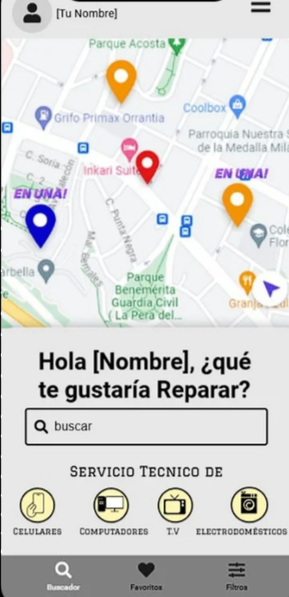
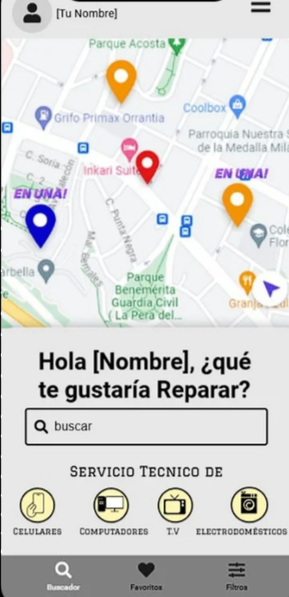
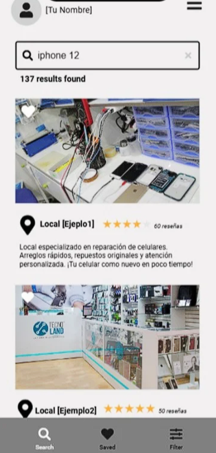
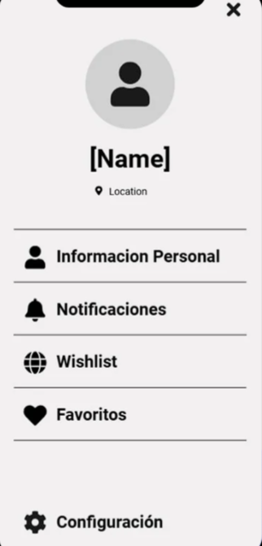
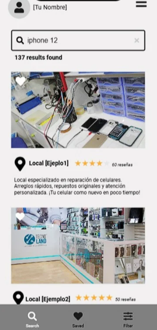
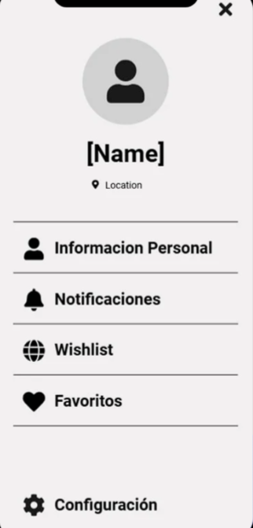

1. Introducción
Muchas personas enfrentan dificultades al momento de encontrar servicios confiables y cercanos para reparar sus dispositivos electrónicos y electrodomésticos. La falta de información y la desconfianza en la calidad de los servicios disponibles generan confusión y frustración.
Frente a esta problemática, surge Repara Ya, una aplicación diseñada para mejorar la comunicación entre locales de reparación y clientes, facilitando el acceso a soluciones seguras, rápidas y eficientes. Además de beneficiar a los usuarios, la plataforma busca impulsar el trabajo de técnicos independientes, conectándolos con más oportunidades laborales.
2. Diseño de la Aplicación
 

 



3. Integrantes del Equipo
Jonathan Gómez
Líder de Proyecto
Felipe Muñoz
Diseñador de UI
Cristian Jiménez
Programador
Alejandro Rojas
Base de Datos
4. Objetivos
- Identificar y resolver problemas reales en la app usando programación y herramientas como UML, prototipos y mockups.
- Aprender a crear y gestionar una base de datos con MySQL y Workbench para organizar bien la información de la app.
- Usar lo aprendido para resolver problemas paso a paso con lógica, creando y probando funciones en Python.
- Crear una función en la app que asigne al técnico más cercano al cliente usando ubicaciones y un algoritmo de distancia.
- Aprender a estructurar y documentar un proyecto tecnológico, desde el problema hasta su desarrollo.
5. Conclusión
Repara Ya no solo busca resolver un problema cotidiano, sino también ofrecer una solución tecnológica completa, funcional y accesible para todos. Con un diseño amigable, integración con bases de datos y un enfoque social que beneficia tanto a usuarios como a técnicos, esta aplicación demuestra el potencial de la programación para transformar necesidades reales en soluciones eficientes. Es una muestra clara de cómo la tecnología, bien aplicada, puede mejorar la vida cotidiana.